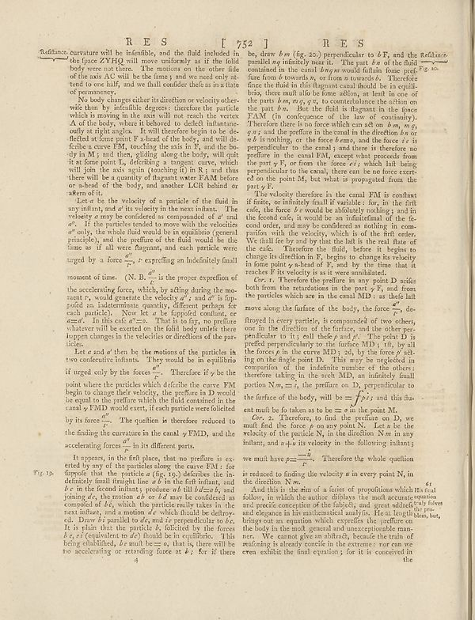

Scan ID britannica:309f765b1ecc83e0a7f7762e44b4a927a7555443:train:611
Image SHA-256 4a137a2c6b0772a82850ed78c5cb2c6ffd9751f4d7fc1345b3f8035665a788ea
Status: ok. Running header: R E S 752 T RES (catchword). Removed page furniture: Page-header: R E S 752 T RES.
PDF · raw Parse reply · LaTeX
Entries: E0060

| # | Class | Box | Parse 3.5 | Used text | Source |
|---|---|---|---|---|---|
| 1 | Text | [0.0781, 0.0758, 0.502, 0.1547] | Radiance curvature will be infinitly, and the fluid included in the frace ZYHQ will move uniformly as if the field body were not there. The motions on the other side of the axis A,C will be the faming and to read only at tend to our half, and we could conclude as its a late of presence. | Refraction. curvature will be inefenfible, and the fluid included in the space ZYHQ will move uniformly as if the solid body were not there. The motions on the other fide of the axis AC will be the fame ; and we need only attend to one half, and we shall confider these as in a state of permanency. | super_vl |
| 2 | Text | [0.1357, 0.1555, 0.5029, 0.3172] | No body changes either its direction or velocity other wile than by infentible degrees; therefore the particle which moving the axis will not include the vortex A of the body, where it behaved to deficit influence easily at right angles. It will therefore begin to be diseflected at fromen F is head of the body; and will de-ferible a curve FM, touching the axis in F, and the bo-ly in M, and then, yielding along the body, will gain it at some point I, defening a tangent curve, which will join the axis again (noching it) in B; and thus there will be a quantity of fragment water FAM because or a-h | No body changes either its direction or velocity otherwise than by insensible degrees: therefore the particle which is moving in the axis will not reach the vertex A of the body, where it behooved to deflect infantaneously at right angles. It will therefore begin to be deflected at some point F a-head of the body, and will describe a curve FM, touching the axis in F, and the body in M; and then, gliding along the body, will quit it at some point I, describing a tangent curve, which will join the axis again (touching it) in R; and thus there will be a quantity of flagrant water FAM before or a- | super_vl |
| 3 | Text | [0.1367, 0.318, 0.5039, 0.5617] | Let us be the velocity of a particle of the fluid in any infant, and d’ its velocity in the next instant. The velocity may be considered in compounded of d’ a”. If the particles tended to meet with the velocities d’a"的, the whole fluid would be in equilibrium (general principle), and the preference of the fluid would be the films as it all were fragment, and each particle were urged by a force d’r, t expelling an indenticity final moment of time. (N. B. jt the proper expedition of the accelerating forces, which, by sliding during the mo- ment r, would generate the velocity d’s and d’ is lip- p | Let a be the velocity of a particle of the fluid in any instant, and a' its velocity in the next instant. The velocity a may be considered as compounded of a' and a". If the particles tended to move with the velocities a" only, the whole fluid would be in equilibrium (general principle), and the preasure of the fluid would be the same as if all were frangnant, and each particle were urged by a force a''/r, r expressing an indefinitely small moment of time. (N. B. a''/r is the proper expression of the accelerating force, which, by acting during the moment r, would generate the velocity a''; and | super_vl |
| 4 | Text | [0.1348, 0.5609, 0.5, 0.7281] | Let o and d’ then be the motions of the particles in two confine infinite. They would be in equilibrio if urged only by the forces d’r. Therefore if y be the point where the particles which define the one: FM begins to change their velocity, the profiles in D would be equal to the profile when the fluid contained in the canal y EMD would exert, if each particle were folicted by its force d’r. The question is therefore reduced to the finding the curvature in the canal y EMD, and the accelerating force d’r in its different parts. | Let a and a' then be the motions of the particles in two consecutive instants. They would be in equilibrio if urged only by the forces a''. Therefore if y be the point where the particles which describe the curve FM begin to change their velocity, the pressure in D would be equal to the pressure which the fluid contained in the canal y FMD would exert, if each particle were solicited by its force a''. The question is therefore reduced to the finding the curvature in the canal y FMD, and the accelerating forces a'' in its different parts. | super_vl |
| 5 | Text | [0.1318, 0.7305, 0.499, 0.8977] | It appears, in the first phase that to preface it by any of the particles along the cause FM : for flipside that the particle a (fig. 10,) defective the in- definitely limit through line ad at in the full nation, and b c in the forced infants; produce d till bd=ab, and joining d’s a motion and d’d may be considered as counted at bg, which the particular reality takes in the next instant, and a motion d’e which should be defrayed. Draw d’s parallel to d’a and perpendicular to it. It is thin that the particle b, foliated by the forces bg, e/s (equivalent to de) should be in equilibrio. This bein | It appears, in the first place, that no preface is exerted by any of the particles along the curve FM: for supposing that the particle a (fig. 19.) describes the indefinitely small straight line ab in the first instant, and bc in the second instant; produce ab till bd=ab, and joining dc, the motion ab or bd may be considered as compounded of bc, which the particle really takes in the next instant, and a motion dc which should be destroyed. Draw bi parallel to dc, and ie perpendicular to bc. It is plain that the particle b, solicited by the forces bc, ei (equivalent to dc) should be in equilibr | super_vl |
| 6 | Text | [0.5156, 0.0789, 0.8809, 0.307] | be, draw km (fig. 20) perpendicular to bF, and the Reflines parallel eq infinitely mean it. The part bn of the fluid contained in the canal hngm would inflation force prefix. find out towards, or from a recorded. Therefore face the fluid in this figure can cancel should be in equilibrio, them and also le forms sellon, as leaf in one of the part bm, n,e, q or to counterbalance the chin on the past bm. But the fluid is important in the space FAM (in consequence of the law so continuity). Therethere is no force which can add on bm, w, q, qy, and the prefiner in the canal in the direction bn or w | be, draw bm (fig. 20.) perpendicular to bF, and the parallel nq infinitely near it. The part bn of the fluid contained in the canal bnqm would fulain some pressure from b towards n, or from n towards b. Therefore since the fluid in this flagrant canal should be in equilibrio, there must also be some action, at least in one of the parts bm, mq, qn, to counterbalance the action on the part bn. But the fluid is flagrant in the space FAM (in consequence of the law of continuity). Therefore there is no force which can act on bm, mq, qn; and the pressure in the canal in the direction bn or nb is not | super_vl |
| 7 | Text | [0.5146, 0.3078, 0.8789, 0.4469] | The velocity therefore in the canal FM is constant if finite, or individual fault variables: for, in the first calc, the force bc would be absolutely nothing; and in the second cad, i would be an infinitesimal of the order, and may be conducted as nothing in com- prantion with the velocity, which is of the first order. We fail too long way that the lab is the real take of the cafe. Therefore the fluid, before it begins to change its distance in N, begun to change its velocity in some point y-haet of Y, and by the time that it reaches F its velocity is as it were annihilated. | The velocity therefore in the canal FM is constant if finite, or infinitely small if variable: for, in the first case, the force bc would be absolutely nothing; and in the second case, it would be an infinitesimal of the second order, and may be considered as nothing in comparison with the velocity, which is of the first order. We shall fee by and by that the last is the real state of the case. Therefore the fluid, before it begins to change its direction in F, begins to change its velocity in some point y-a-head of F, and by the time that it reaches F its velocity is as it were annihilated. | super_vl |
| 8 | Text | [0.5137, 0.4477, 0.8721, 0.7227] | Or? it. Therefore the perform in any point D swife from the translation in the part y F, and from the particles which are in the canal MD : as their left move along the surface of the body, the force g, de- flyerted in every particle, is composed around of two others, one in the direction of the inferior, and the other spec pedicular to it; call thick p and j. The point D is perfect perpendicular to the surface MD, yth, by all the forces j in the curve MD; z; i, by the theory ed- ing on the fingle point D. This may be neglected in compulsion of the indefinite number of the others therefore tak | Cor. 1. Therefore the pressure in any point D arises both from the retardations in the part F, and from the particles which are in the canal MD: as they all move along the surface of the body, the force a, destroyed in every particle, is compounded of two others, one in the direction of the surface, and the other perpendicular to it; call these p and q. The point D is pressed perpendicularly to the surface MD; first, by all the forces p in the curve MD; secondly, by the force q acting on the single point D. This may be neglected in comparison of the indefinite number of the others; therefore t | super_vl |
| 9 | Text | [0.5127, 0.7289, 0.8936, 0.7836] | we mutl have p - Therefore the whole quotient is reduced to finding the velocity a in every point N, in the direction Nw. | we must have p = - . Therefore the whole question is reduced to finding the velocity a in every point N, in the direction Nw. | super_vl |
| 10 | Text | [0.5166, 0.7844, 0.9268, 0.9062] | And this is the sum of a factor of proportions which its neat follow, in which the author defines the math accurate equation and predict conception of the difficulty and great candidate(y) forces and elegance in his mathematical analysis. He si length plan, but brings out an motion which expedite the practice on the body in the mold, ground and manageable pun-ner. We cannot give an abstract, because the train of reading is already coincide in the extreme: nor can we even exhibit the final equation) for it is conceivable in the | And this is the sum of a series of propositions which follow, in which the author displays the most accurate and precise conception of the subject, and great address and elegance in his mathematical analysis. He at length brings out an equation which expresses the preface on the body in the most general and unexceptionable manner. We cannot give an abstract, because the train of reasoning is already concise in the extreme: nor can we even exhibit the final equation; for it is conceived in the | super_vl |
Britannica scans: National Library of Scotland, CC0 1.0. Wikipedia text: Wikipedia contributors, CC BY-SA 4.0, revision links on each page. Generated 2026-10-18T13:26:14+00:00.